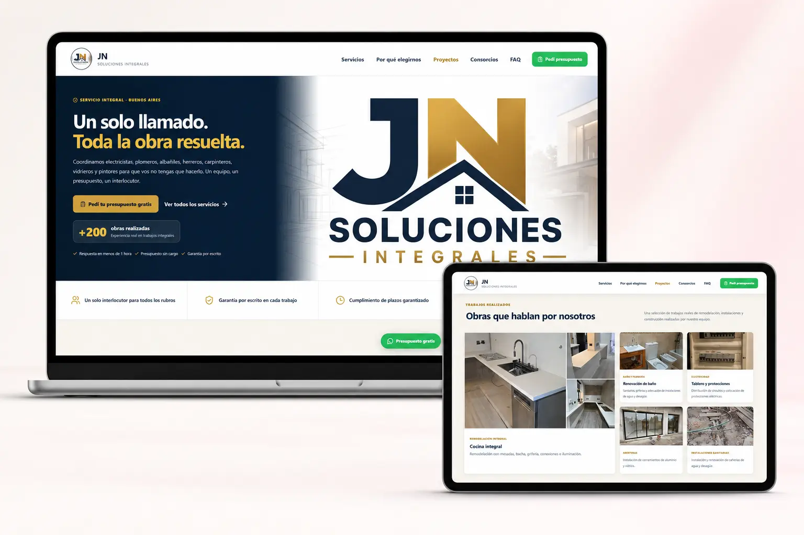

01
Aplicación web · PWA
Mi Progreso Académico
Aplicación para organizar materias, tareas, notas y fechas de examen durante la Tecnicatura en Ciencia de Datos e Inteligencia Artificial.
Proyecto privado · Solo vista previa
Mi portfolio
Desarrolladora de Software Junior · Estudiante de Ciencia de Datos e IA
Diseño, programo y publico aplicaciones web completas, automatizaciones y productos digitales para resolver necesidades reales.
1nati = { 2 "creativa", 3 "resolutiva", 4 "aprendizaje": "constante", 5 "objetivo": "crear soluciones reales" }
01 · Sobre mí
Soy desarrolladora web full stack junior, con experiencia en el diseño, programación y publicación de aplicaciones completas a través de proyectos propios, productos digitales y sitios desarrollados para clientes.
Trabajo con Python, JavaScript, PHP, HTML, CSS, SQL, Supabase, Git y GitHub. Combino mi formación técnica con más de 17 años de experiencia administrativa y financiera, que me aportaron rigor analítico, responsabilidad en el manejo de información crítica y capacidad para comprender y mejorar procesos de negocio.
Actualmente curso la Tecnicatura Superior en Ciencia de Datos e Inteligencia Artificial en el IFTS N.º 12.
02 · Trabajo seleccionado
Aplicaciones, productos digitales y sitios desarrollados para proyectos propios y clientes.
Aplicación web · PWA
Aplicación para organizar materias, tareas, notas y fechas de examen durante la Tecnicatura en Ciencia de Datos e Inteligencia Artificial.
Catálogo comercial
Catálogo online responsive con productos, precios, carrito de compra y generación de pedidos mediante WhatsApp.
Producto digital · UX
Emprendimiento de productos digitales para la organización personal y académica. Diseño y desarrollo el sitio, las aplicaciones, la gestión de accesos y la mejora continua de cada producto.
Backend · Automatización
MVP de facturación electrónica que procesa lotes de ventas en CSV, emite Facturas C mediante servicios de ARCA y registra comprobantes, errores y reintentos en SQLite.
Sitio para cliente · Responsive

Sitio web institucional desarrollado para un cliente real, con presentación de servicios, información comercial, contacto directo y diseño adaptable a computadoras, tablets y celulares.
03 · Herramientas
Mi stack crece con cada proyecto. Estas son las herramientas con las que trabajo y sigo aprendiendo.
Python
↗JavaScript
↗PHP
↗HTML & CSS
↗SQL
↗Supabase
↗FastAPI & Pandas
↗Git & GitHub
↗Vercel & GitHub Pages
↗PWA y diseño responsive
↗Automatización
↗Inteligencia Artificial
↗04 · Contacto
Busco oportunidades trainee o junior en desarrollo de software, automatización, datos e inteligencia artificial. También estoy disponible para proyectos web freelance.